사회조사분석사-2급 (2018-03-04 기출문제)
1과목: 조사방법론 I
1. 다음 질문문항의 주된 문제점에 해당하는 것은?
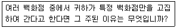
- 단어들의 뜻이 명확하지 않다.
- 하나의 항목에 두 가지 질문 내용이 포함되어 있다.
- 지나치게 자세한 응답을 요구하고 있다.
- 임의로 응답자들에 대한 가정을 두고 있다.
(정답률: 74%)

2. 개별적인 질문이 결정된 이후 응답자에게 제시하는 질문순서에 관한 설명으로 틀린 것은?
- 특수한 것을 먼저 묻고 그 다름에 일반적인 것을 질문하도록 하는 것이 좋다.
- 연상 작용이 가능한 질문들의 간격은 멀리 떨어뜨리는 것이 좋다.
- 개인 사생활에 관한 질문과 같이 민감한 질문은 가급적 뒤로 배치하는 것이 좋다.
- 질문은 논리적인 순서에 따라 자연스럽게 배치하는 것이 좋다.
(정답률: 83%)
3. 질적 연구에 관한 설명으로 틀린 것은?
- 소규모 분석에 유리하고 자료 분석 시간이 많이 소요된다.
- 주관적 동기의 이해와 의미해석을 하는 현상학적 ㆍ 해석학적 입장이다.
- 수집된 자료는 타당성이 있고 실질적이거나 신뢰성이 낮고 일반화는 곤란하다.
- 연구 참여자와 연구자 간에 상호작용을 통해 연구가 진행되도록 가치지향적이지 않고 편견이 개입되지 않는다.
(정답률: 78%)
4. 조사계획서에 포함되어야 할 일반적인 내용에 해당하지 않는 것은?
- 조사의 목적과 조사 일정
- 조사의 잠정적 제목
- 조사결과의 요약 내용
- 조사일정과 조사 참여자의 프로파일
(정답률: 69%)
5. 사회과학연구방법을 연구목적에 따라 구분할 때, 탐색적 연구의 목적에 해당하는 것을 모두 고른 것은?
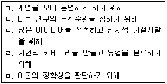
- ㄱ, ㄴ, ㄷ
- ㄱ, ㄷ, ㄹ
- ㄴ, ㄹ, ㅁ
- ㄴ, ㄷ, ㄹ
(정답률: 49%)
6. 다음에서 설명하고 있는 것은?
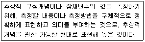
- 조작적 정의(Operational Definition)
- 구성적 정의(Constitutive Definition)
- 기술적 정의(Descriptive Definition)
- 가설 설정(Hypothesis Definition)
(정답률: 82%)
7. 관찰법(Observation Method)의 분류기준에 대한 설명으로 틀린 것은?
- 관찰이 일어나는 상황이 인공적인지 여부에 따라 자연적/인위적 관찰로 나누어진다.
- 관찰시기가 행동발생과 일치하는지 여부에 따라 체계적/비체계적 관찰로 나누어진다.
- 피관찰자가 관찰사실을 알고 있는지 여부에 따라 공개적/비공개적 관찰로 나누어진다.
- 관찰주체 또는 도구가 무엇인지에 따라 인간의 직접적/기계를 이용한 관찰로 나누어진다.
(정답률: 75%)
8. 이론으로부터 가설을 도출한 후 경험적 관찰을 통하여 검증하는 탐구방식은?
- 귀납적 방법
- 연역적 방법
- 기술적 연구
- 분석적 연구
(정답률: 78%)
9. 면접조사에 관한 설명과 가장 거리가 먼 것은?
- 면접 시 조사자는 질문뿐 아니라 관찰도 할 수 있다.
- 같은 조건하에서 우편설문에 비하여 높은 응답률을 얻을 수 있다.
- 여러 명의 면접원을 고용하여 조사할 때는 이들을 조정하고 통제하는 것이 요구된다.
- 가구소득, 가정폭력, 성적경향 등 민감한 사안의 조사시 유용하다.
(정답률: 80%)
10. 자료수집방법에 대한 비교설명으로 옳은 것은?
- 인터넷조사는 우편조사에 비하여 비용이 많이 소요된다.
- 전화조사는 면접조사에 비해서 시간이 많이 소요된다.
- 인터넷조사는 다른 조사에 비해 시각보조 자료의 활용이 곤란하다.
- 면접조사는 다른 조사에 비해 래포(Rapport)의 형성이 용이하다.
(정답률: 83%)
11. 과학적 연구에서 이론의 역할을 모두 고른 것은?
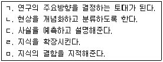
- ㄱ, ㄴ, ㄹ
- ㄴ, ㄷ, ㅁ
- ㄱ, ㄷ, ㄹ, ㅁ
- ㄱ, ㄴ, ㄷ, ㄹ, ㅁ
(정답률: 60%)
12. 다음 중 참여관찰에서 윤리적인 문제를 겪을 가능성이 가장 높은 관찰자 유형은?
- 완전참여자(Complete Participant)
- 완전관찰자(Complete Observer)
- 참여자로서의 관찰자(Observer as Participant)
- 관찰자로서의 참여자(Participant as Observer)
(정답률: 74%)
13. 질문지 설계 시 고려할 사항과 가장 거리가 먼 것은?
- 지시문의 내용
- 자료수집방법
- 질문의 유형
- 표본추출방법
(정답률: 67%)
14. 인과관계의 일반적인 성립조건과 가장 거리가 먼 것은?
- 시간적 선행성(Temporal Precedence)
- 공변관계(Covariation)
- 비허위적 관계(Lack of Spuriousness)
- 연속변수(Continuous Variable)
(정답률: 67%)
15. 다음 중 집단구성원들 간의 인간관계를 분석하고 그 강도나 빈도를 측정하여 집단 자체의 구조를 파악하고자 할 때 적합한 방법은?
- 투사법(Projective Technique)
- 사회성측정법(Sociometry)
- 내용분석법(Content Analysis)
- 표적집단 면접법(Focus Group Interview)
(정답률: 57%)
16. 인터넷 서베이 조사에 관한 설명으로 틀린 것은?
- 실시간 리포팅이 가능하다.
- 개인화된 질문과 자료제공이 용이하다.
- 설문응답과 동시에 코딩이 가능하다.
- 응답자의 지리적 위치에 따라 비용이 발생한다.
(정답률: 83%)
17. 다음 중 집단조사에 대한 설명으로 틀린 것은?
- 비용과 시간을 절약하고 동일성을 확보할 수 있다.
- 주위의 응답자들과 의논할 수 있어 왜곡된 응답을 줄일 수 있다.
- 학교나 기업체, 군대 등의 조직체 구성원을 조사할 때 유용하다.
- 조사대상에 따라서는 집단을 대상으로 한 면접방식과 자기 기입방식을 조합하여 실시하기도 한다.
(정답률: 81%)
18. 다음 중 설문지 사전검사(Pre-test)의 주된 목적은?
- 응답자들의 분포를 확인한다.
- 질문들이 갖고 있는 문제들을 파악한다.
- 본조사의 결과와 비교할 수 있는 자료를 얻는다.
- 조사원들을 훈련한다.
(정답률: 71%)
19. 가설의 적정성을 평가하기 위한 기준과 가장 거리가 먼 것은?
- 매개변수가 있어야 한다.
- 동의어가 반복적이지 않아야 한다.
- 경험적으로 검증될 수 있어야 한다.
- 동일분야의 다른 이론과 연관이 있어야 한다.
(정답률: 66%)
20. 2017년 특정한 3개 고등학교(A, B, C)의 졸업생들을 모집단으로 하여 향후 10년간 매년 일정시점에 표본을 추출하여 조사를 한다면 어떤 조사에 해당하는가?
- 횡단조사
- 서베이 리서치
- 코호트 조사
- 사례 조사
(정답률: 78%)
21. 내용분석에 관한 설명으로 틀린 것은?
- 조사대상에 영향을 미친다.
- 시간과 비용 측면에서의 경제성이 있다.
- 일정기간 동안 진행되는 과정에 대한 분석이 용이하다.
- 연구 진행 중에 연구계획의 부분적인 수정이 가능하다.
(정답률: 65%)
22. 탐색적 조사(Exploratory Research)에 관한 설명으로 옳은 것은?
- 시간의 흐름에 따라 일반적인 대상 집단의 변화를 관찰하는 조사이다.
- 어떤 현상을 정확하게 기술하는 것을 주목적으로 하는 조사이다.
- 동일한 표본을 대상으로 일정한 시간간격을 두고 반복적으로 측정하는 조사이다.
- 연구문제의 발견, 변수의 규명, 가설의 도출을 위해서 실시하는 조사로서 예비적 조사로 실시한다.
(정답률: 78%)
23. 순수 실험설계와 유사 실험설계를 구분하는 기준으로 가장 적합한 것은?
- 독립변수의 설정
- 비교집단의 설정
- 종속변수의 설정
- 실험대상 선정의 무작위화
(정답률: 60%)
24. 패널조사에 관한 설명으로 틀린 것은?
- 특정 조사대상자들을 선정해 놓고 반복적으로 실시하는 조사방법을 의미한다.
- 종단적 조사의 성격을 지닌다.
- 반복적인 조사과정에서 성숙효과, 시험효과가 나타날 수 있다.
- 패널 운영시 자연 탈락된 패널 구성원은 조사결과에 크게 영향을 미치지 않는다.
(정답률: 83%)
25. 개방형 질문의 특징에 관한 설명으로 틀린 것은?
- 응답자들의 모든 가능한 의견을 얻어낼 수 있다.
- 탐색조사를 하려는 경우 특히 유용하게 이용 될 수 있다.
- 응답내용의 분류가 어려워 자료의 많은 부분이 분석에서 제외되기도 한다.
- 질문에 대해 중립적인 입장을 가진 사람만을 대상으로 조사하더라도 극단적인 결론이 얻어진다.
(정답률: 72%)
26. 다음 사례에서 사용한 조사설계는?
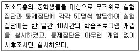
- 통제집단 사전-사후검사 설계(Pretest-posttest Control Group Design)
- 통제집단 사후검사 설계(Posttest-only Control Group Design)
- 단일집단 사전-사후검사 설계(One-group Pretest-posttest Design)
- 정태집단 비교 설계(Static Group Comparison Design)
(정답률: 69%)
27. 면접조사에서 질문의 일반적인 원칙과 가장 거리가 먼 것은?
- 조사대상자가 가능한 비공식적인 분위기에서 편안한 자세로 대답할 수 있어야 한다.
- 질문지에 있는 말 그대로 질문해야 한다.
- 조사대상자가 대답을 잘 하지 못할 경우 필요한 대답을 유도할 수 있다.
- 문항은 하나도 빠짐없이 물어야 한다.
(정답률: 71%)
28. 연구자들의 신념체계를 구성하는 과학적인 연구방법의 기본가정과 가장 거리가 먼 것은?
- 진리는 절대적이다.
- 모든 현상과 사건에는 원인이 있다.
- 자명한 지식은 없다.
- 경험적 관찰이 지식의 원천이다.
(정답률: 78%)
29. 연구의 단위(Unit)를 혼동하여 집합단위의 자료를 바탕으로 개인의 특성을 추리할 때 저지를 수 있는 오류는?
- 집단주의 오류
- 생태주의 오류
- 개인주의 오류
- 환원주의 오류
(정답률: 69%)
30. 다음 설명에 해당하는 가설의 종류는?
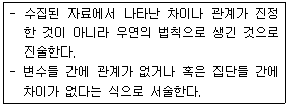
- 대안가설
- 귀무가설
- 통계적 가설
- 설명적 가설
(정답률: 73%)
2과목: 조사방법론 II
31. 다음 중 신뢰성의 개념과 가장 거리가 먼 것은?
- 안정성
- 일관성
- 동시성
- 예측가능성
(정답률: 54%)
32. 측정 수준에 대한 설명으로 틀린 것은?
- 서열척도는 각 범주 간에 크고 작음의 관계를 판단할 수 있다.
- 비율척도에서 0의 값은 자의적으로 부여되었으므로 절대적 의미를 가질 수 없다.
- 명목척도에서는 각 범주에 부여되는 수치가 계량적 의미를 가지지 못한다.
- 등간척도에서는 각 대상 간의 거리나 크기를 표준화된 척도로 표시할 수 있다.
(정답률: 76%)
33. 군집표집(Cluster Sampling)에 대한 설명으로 틀린 것은?
- 군집이 동질적이면 오차의 가능성이 낮다.
- 전체 모집단의 목록표를 작성하지 않아도 된다.
- 단순무작위표집에 비해 시간과 비용을 절약할 수 있다.
- 특정 집단의 특성을 과대 혹은 과소하게 나타낼 위험이 있다.
(정답률: 39%)
34. 다음 중 일정한 특성을 지니는 모집단의 구성비율에 일치하도록 표본을 추출함으로써 모집단을 대표할 수 있는 표집방법은?
- 할당표집(Quota Sampling)
- 눈덩이표집(Snowball Sampling)
- 유의표집(Purposive Sampling)
- 편의표집(Convenience Sampling)
(정답률: 73%)
35. 총 학생수가 2,000명인 학교에서 800명을 표집 할 때의 표집율은?
- 25%
- 40%
- 80%
- 100%
(정답률: 73%)
36. 내용타당도(Content Validity)에 관한 설명으로 옳은 것은?
- 통계적 검증이 가능하다.
- 특정대상의 모든 속성들을 파악할 수 있다.
- 조사자의 주관적 해석과 판단에 의해 결정되기 쉽다.
- 다른 측정결과와 비교하여 관련성 정도를 파악한다.
(정답률: 45%)
37. 연구대상의 속성을 일정한 규칙에 따라서 수량화 하는 것을 무엇이라 하는가?
- 척도
- 측정
- 요인
- 속성
(정답률: 64%)
38. 척도구성 방법 중 인종, 사회계급과 같은 여러 가지 형태의 사회집단에 대한 사회적 거리를 측정하기 위한 척도는?
- 서스톤척도(Thurston Scale)
- 보가더스 척도(Bogardus Scale)
- 거트만 척도(Guttman Scale)
- 리커트척도(Likert Scale)
(정답률: 70%)
39. 표집오차(Sampling Error)에 대한 일반적인 설명으로 틀린 것은?
- 일반적으로 표본의 크기가 클수록 표집오차는 작아진다.
- 일반적으로 표본의 분산이 작을수록 표집오차는 작아진다.
- 표본의 크기가 같을 경우 할당표집에서보다 층화표집의 경우 표집오차가 더 크다.
- 표본의 크기가 같을 경우 단순무작위표집에서보다 집락표집의 경우 표집오차가 더 크다.
(정답률: 54%)
40. 다음 중 1,500명의 표본을 대상으로 국민들의 소비성향 조사를 하려할 때 최소의 비용으로 표집오차를 가장 효과적으로 감소시킬 수 있는 방법은?
- 표본수를 10배로 증가시킨다.
- 모집단의 동질성 확보를 위한 연구를 한다.
- 조사요원을 증원하고 이들에 대한 훈련을 철저히 한다.
- 전 국민을 대상으로 철저한 단수무작위표집을 실행한다.
(정답률: 52%)
41. 측정에 관한 설명으로 틀린 것은?
- 관념적 세계와 추상적 세계 간의 교량역할을 한다.
- 통계분석에 활용할 수 있는 정보를 제공해준다.
- 측정수준에 관계없이 통계기법의 적용은 동일하다.
- 측정대상이 지니고 있는 속성에 수치나 기호를 부여하는 것이다.
(정답률: 77%)
42. 척도제작 시 요인분석(Factor Analysis)의 활용과 가장 거리가 먼 것은?
- 문항들 간의 관련성 분석
- 척도의 구성요인 확인
- 척도의 신뢰성 계수 산출
- 척도의 단일 차원성에 대한 검증
(정답률: 41%)
43. 서스톤(Thurslone) 척도는 척도의 수준으로 볼 때 어느 척도에 해당하는가?
- 등간척도
- 서열척도
- 명목척도
- 비율척도
(정답률: 67%)
44. 연구에서 설정한 개념을 실제 현상에서 측정이 가능하도록 관찰 가능한 형태로 표현하는 것은?
- 개념적 정의
- 조작적 정의
- 이론적 정의
- 구성적 정의
(정답률: 77%)
45. 비확률 표본추출방법에 해당하는 것은?
- 할당표집(Quota Sampling)
- 층화표집(Stratified Random Sampling)
- 군집표집(Cluster Sampling)
- 단순무작위표집(Simple Random Sampling)
(정답률: 67%)
46. 신뢰도 추정방법 중 동일측정도구를 동일상황에서 동일대상에게 서로 다른 시간에 측정한 측정 결과를 비교하는 것은?
- 재검사법
- 복수양식법
- 반분법
- 내적일관성 분석
(정답률: 75%)
47. 다음 ( )에 알맞은 것은?
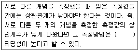
- 예측(Predictive)
- 동시(Concurrent)
- 판별(Discriminant)
- 수렴(Convergent)
(정답률: 66%)
48. 다음에서 설명하고 있는 측정의 종류는?
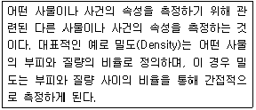
- A급 측정(Measurement of A Magnitude)
- 추론측정(Derived Measurement)
- 임의측정(Measurement by Fiat)
- 본질측정(Fundamental Measurement)
(정답률: 68%)
49. 매개변수(Intervening Variable)에 관한 설명으로 옳은 것은?
- 원인변수 혹은 가설변수라고 하는 것으로서 사전에 조작되지 않은 변수를 의미한다.
- 결과변수라고 하며, 독립변수의 원인을 받아 일정하게 변화된 결과를 나타내는 기능을 하는 변수를 의미한다.
- 결과변수에 영향을 미치면서도 그 이유를 제대로 설명하지 못하는 변수를 의미한다.
- 개입변수라고도 불리며, 종속변수에 일정한 영향을 주는 변수로 독립변수에 의하여 설명되지 못하는 부분을 설명해주는 변수를 말한다.
(정답률: 72%)
50. 종업원이 친절할수록 패밀리 레스토랑의 매출액이 증가한다는 가설을 검증하고자 할 경우, 레스토랑의 음식 맛 역시 매출에 영향을 미친다면 음식의 맛은 어떤 변수인가?
- 종속변수
- 매개변수
- 외생변수
- 조절변수
(정답률: 63%)
51. 다음 중 신뢰성을 높일 수 있는 방법과 가장 거리가 먼 것은?
- 측정항목의 수를 줄인다.
- 측정항목의 모호성을 제거한다.
- 중요한 질문의 경우 동일하거나 유사한 질문을 2회 이상 한다.
- 조사대상자가 잘 모르거나 관심이 없는 내용은 측정하지 않는다.
(정답률: 70%)
52. 어떤 제품의 선호도를 조사하기 위하여 “아주 좋아한다. 좋아한다. 싫어한다. 아주 싫어한다”와 같은 선택지를 사용하였다. 이는 어떤 척도 측정된 것인가?
- 서열척도
- 명목척도
- 등간척도
- 비율척도
(정답률: 65%)
53. 다음 중 표본의 대표성이 가장 큰 표본 추출방법은?
- 편의표집(Convenience Sampling)
- 판단표집(Judgement Sampling)
- 군집표집(Cluster Sampling)
- 할당표집(Quota Sampling)
(정답률: 68%)
54. 다음 중 표본추출 과정에 해당되지 않는 것은?
- 표본프레임 결정
- 조사연구 자금 확보
- 표집방법 결정
- 모집단의 결정
(정답률: 83%)
55. 다음 ( )안에 들어갈 알맞은 것은?
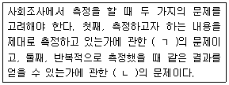
- ㄱ : 타당성, ㄴ : 신뢰성
- ㄱ : 신뢰성, ㄴ : 타당성
- ㄱ : 신뢰성, ㄴ : 동일성
- ㄱ : 동일성, ㄴ : 타당성
(정답률: 79%)
56. 비확률 표본추출법과 비교한 확률 표본추출법의 특징을 모두 고른 것은?
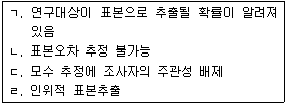
- ㄱ
- ㄱ, ㄷ
- ㄴ, ㄹ
- ㄴ, ㄷ, ㄹ
(정답률: 48%)
57. 4년제 대학에 다니는 대학생의 정치의식을 조사하기 위해 학년(Grade)과 성(Sex)에 따라 할당표집을 할 때 표본추출을 위한 할당범주는 몇 개인가?
- 2개
- 4개
- 8개
- 16개
(정답률: 78%)
58. 측정오차의 발생원인과 가장 거리가 먼 것은?
- 통계분석기법
- 측정방법 자체의 문제
- 측정시점에 따른 측정대상자의 변화
- 측정시점의 환경요인
(정답률: 64%)
59. 다음은 어떤 척도를 활용한 것인가?
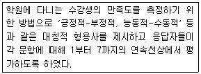
- 거트만척도(Guttman Scale)
- 리커트척도(Likert Scale)
- 서스톤척도(Thurston Scale)
- 의미분화척도(Semantic Differential Scale)
(정답률: 71%)
60. 다음 중 군집표집의 추정 효율이 가장 높은 경우는?
- 집락 간 평균이 서로 다른 경우
- 각 집락이 모집단의 축소판일 경우
- 각 집락 내 관측값들이 비슷할 경우
- 각 집락마다 집락들의 특성이 서로 다른 경우
(정답률: 67%)
3과목: 사회통계
61. 사건 A의 발생확률이 1/5인 임의실험을 50회 반복하는 독립시행에서 사건 A가 발생한 횟수의 평균과 분산은?
- 평균 : 10, 분산 : 8
- 평균 : 8, 분산 : 10
- 평균 : 7, 분산 : 11
- 평균 : 11, 분산 : 7
(정답률: 73%)
62. 다음 분산분석표의 각 ( ) 안에 들어갈 값으로 옳은 것은?
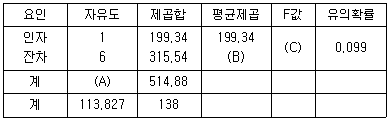
- A : 7, B : 1893.24, C : 9.50
- A : 7, B : 1893.24, C : 2.58
- A : 7, B : 52.59, C : 3.79
- A : 7, B : 52.59, C : 2.58
(정답률: 61%)
63. 집단 A 에서 크기 nA의 임의표본(평균 mA, 표준편차 sA)을 추출하고, 집단 B 에서는 크기 nB의 임의표본(평균 mB, 표준편차 sB)을 추출하였다. 두 집단의 산포(散布)를 비교하는데 적합한 통계치는?
- mA -mB
- mA/mB
- sA-sB
- sA/sB
(정답률: 50%)
64. 일원배치법의 모형 Yij=μ+αi+εij에서 오차항 εij의 가정에 대한 설명으로 틀린 것은?
- 오차항 εij는 정규분포를 따른다.
- 오차항 εij는 서로 독립이다.
- 오차항 εij의 기댓값은 0이다.
- 오차항 εij의 분산은 동일하지 않아도 무방하다.
(정답률: 56%)
65. 표본평균의 확률분포에 관한 설명으로 틀린 것은?
- 모집단의 확률분포가 정규분포이면 표본평균의 확률분포도 정규분포이다.
- 표본평균의 확률분포는 모집단의 확률분포에 관계없이 정규분포이다.
- 모집단의 표준편차가 σ 이면 표본의 크기가 n 인 표본평균의 표준오차는 σ/√n 이다.
- 표본평균의 평균은 모집단의 평균과 동일하다.
(정답률: 49%)
66. 회귀분석을 실시한 결과 다음의 분산분석표를 얻었다. 결정계수는 얼마인가?
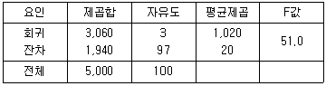
- 60.0%
- 60.7%
- 61.2%
- 62.1%
(정답률: 64%)
67. 독립변수가 개인 중회귀모형 y=Xβ+ε 에서 회귀계수벡터 β의 추정량 b의 분산-공분산 행렬 Var(b)은? (단, Var(ε)=σ2I)
- Var(b)=X'Xσ2
- Var(b)=(X'X)-1σ2
- Var(b)=k(X'X)-1σ2
- Var(b)=k(X'X)σ2
(정답률: 33%)
68. 다음은 두 종류의 타이어의 평균수명에 차이가 있는지를 확인하기 위하여 각각 60개의 표본을 추출하여 조사한 결과이다. 두 타이어의 평균수명에 차이가 있는지를 유의수준 5%에서 검정한 결과는? (단, P(Z＞1.96)=0.025, P(Z＞1.645)=0.⑤)
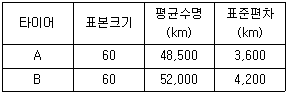
- 두 타이어의 평균수명에 통계적으로 유의한 차이가 없다.
- 두 타이어의 평균수명에 통계적으로 유의한 차이가 있다.
- 두 타이어의 평균수명이 완전히 일치한다.
- 주어진 정보만으로는 알 수 없다.
(정답률: 54%)
69. 어느 집단의 개인별 신장을 기록한 것이다. 중위수는 얼마인가?
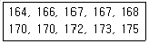
- 167
- 168
- 169
- 170
(정답률: 69%)
70. A회사에서 개발하여 판매하고 있는 신형 pc의 수명은 평균이 5년이고 표준편차가 0.6년인 정규본포를 따른다고 한다. A회사의 신형 pc 중 9대를 임의로 추출하여 수명을 측정하였다. 평균수명이 4.6년 이하일 확률은? (단, P(|Z|＞2)=0.046, P|Z|＞1.96)=0.⑤, P(|Z|＞2.58)=0.01)
- 0.01
- 0.023
- 0.025
- 0.048
(정답률: 47%)
71. 모집단으로부터 추출한 크기 100의 표본을 취하여 조사한 결과 표본비율은
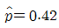
이었다. 귀무가설 H0:p=0.4 와 대립가설 H1:p＞0.4 를 검정하기 위한 검정통계량은?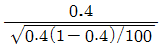
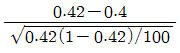
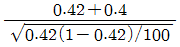
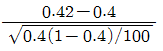
(정답률: 45%)
72. 다음은 A대학 입학시험의 지역별 합격자 수를 성별에 따라 정리한 자료이다. 지역별 합격자 수가 성별에 따라 차이가 있는지를 검정하기 위해 교차분석을 하고자 한다. 카이제곱(X2) 검정을 한다면 자유도는 얼마인가?
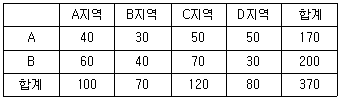
- 1
- 2
- 3
- 4
(정답률: 57%)
73. 일원배치 분산분석에서 인자의 수준이 3이고 각 수준마다 반복실험을 5회씩 한 경우 잔차(오차)의 자유도는?
- 9
- 10
- 11
- 12
(정답률: 51%)
74. 어느 농구선수의 자유투 성공률은 90%이다. 이 선수가 한 시즌에 20번의 자유투를 시도한다고 할 때 자유투의 성공 횟수에 대한 기댓값은?
- 17
- 18
- 19
- 20
(정답률: 73%)
75. 홈쇼핑 콜센터에서 30분마다 전화를 통해 주문이 성사되는 건수는 λ=6.7인 포아송분포를 따른다고 할 때의 설명으로 틀린 것은?
- 확률변수 는 주문이 성사되는 주문건수를 말한다.
- x 의 확률함수는
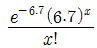
이다. - 1시간 동안의 주문 건수 평균은 13.4이다.
- 분산 r=6.72 이다.
(정답률: 50%)
76. 어느 대형마트 고객관리팀에서는 다음과 같은 기준에 따라 매일 고객을 분류하여 관리한다.
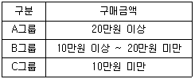
어느 특정한 날 마트를 방문한 고객들의 자료를 분류한 결과 A그룹이 30%, B그룹이 50%, C그룹이 20%인 것으로 나타났다. 이날 마트를 방문한 고객 중 임의로 4명을 택할 때 이들 중 3명만이 B그룹에 속할 확률은?- 0.25
- 0.27
- 0.37
- 0.39
(정답률: 49%)
77. 두 변수 X 와 Y 의 상관계수 rxy에 대한 설명으로 틀린 것은?
- rxy는 두 변수 X 와 Y 의 산포의 정도를 나타낸다.
- -1≤rxy≤+1
- rxy=0 이면 두 변수는 선형이 아니거나 무상관이다.
- rxy=-1 이면 두 변수는 완전한 음의 상관관계에 있다.
(정답률: 32%)
78. 통계학 강의를 수강한 학생들을 대상으로 결석시간 x와 학기말성적 y의 관계를 회귀모형 『yy=β0+β1xi+εi, ~N(0,σ2)이고 서로 독립』의 가정하에 분석하기로 하고 수강생 10명을 임의로 추출하여 얻은 자료를 정리하여 다음의 결과를 얻었다. 결석시간 x와 학기말성적 y간의 상관계수를 구하면?(오류 신고가 접수된 문제입니다. 반드시 정답과 해설을 확인하시기 바랍니다.)
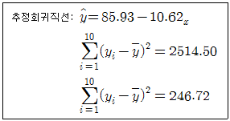
- 0.95
- -0.95
- 0.90
- -0.90
(정답률: 27%)
79. 유의확률에 관한 설명으로 옳은 것은?
- 검정통계량의 값을 관측하였을 때, 이에 근거하여 귀무가설을 기각할 수 있는 최소의 유의수준을 말한다.
- 검정에 의해 의미있는 결론에 이르게 될 확률을 의미한다.
- 제1종 오류를 범할 확률의 최대허용한계를 뜻한다.
- 대립가설이 참일 때 귀무가설을 기각하게 될 최소의 확률을 뜻한다.
(정답률: 40%)
80. 다음 설명 중 틀린 것은?
- 변이계수(Coefficient of Variation)는 여러 집단의 분산을 상대적으로 비교할 때 사용하며
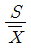
로 정의된다. - Y=-2X+3일 때 SY=4SX이다. 단, SX, SY는 각각 X와 Y의 표준편차이다.
- 상자그림(Box Plot)은 여러 집단의 분포를 비교하는데 많이 사용한다.
- 상관계수가 0이라 하더라도 두 변수의 관련성이 있는 경우도 있다.
(정답률: 42%)
81. 단순회귀모형 Yi=α+βXi+εi,i=1,2,⋯,n 에 대한 설명으로 틀린 것은?
- 결정계수는 X 와 Y 의 상관계수와는 관계없는 값이다.
- β=0인 가설을 검정하기 위하여 자유도가 n-2 인 t분포를 사용할 수 있다.
- 오차 εi의 분산의 추정량은 평균제곱오차이며 보통MSE로 나타낸다.
- 잔차의 그래프를 통해 회귀모형의 가정에 대한 타당성을 검토할 수 있다.
(정답률: 47%)
82. 표본으로 추출된 15명의 성인을 대상으로 지난해 감기로 앓았던 일수를 조사하여 다음의 데이터를 얻었다. 평균, 중앙값, 최빈값, 범위를 계산한 값 중 틀린 것은?
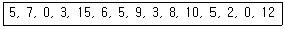
- 평균 = 6
- 중앙값 = 5
- 최빈값 = 5
- 범위 = 14
(정답률: 67%)
83. 모분산 σ2=16 인 정규모집단에서 표본의 크기가 25인 확률표본을 추출한 결과 표본평균 10을 얻었다. 모평균에 대한 90% 신뢰구간을 구하면? (단, 표준정규분포를 따르는 확률변수 Z에 대해 P(Z＜1.28)=0.90, P(Z＜1.645)=0.95, P(Z＜1.96)=0.975)
- (8.43, 11.57)
- (8.68, 11.32)
- (8.98, 11.02)
- (9.18, 10.82)
(정답률: 41%)
84. 가설검정에 대한 설명으로 틀린 것은?
- 제1종 오류란 귀무가설이 사실임에도 불구하고 귀무가설을 기각하는 오류이다.
- 제2종 오류란 대립가설이 사실임에도 불구하고 귀무가설을 기각하지 못하는 오류이다.
- 가설검정에서 유의수준이란 제1종 오류를 범할 확률의 최대허용한계이다.
- 유의수준을 감소시키면 제2종 오류를 범할 확률 역시 감소한다.
(정답률: 59%)
85. 단순회귀모형 Yi=β0+β1Xi+εi,(i=1,2,⋯,n)의 가정하에 최소제곱법에 의해 회귀직선을 추정하는 경우 잔차
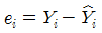
의 성질로 틀린 것은?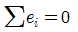
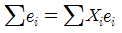
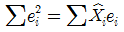
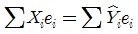
(정답률: 40%)
86. 어느 화장품 회사에서 새로 개발한 상품에 대한 선호도를 조사하려고 한다. 400명의 조사 대상자 중에서 새 상품을 선호한 사람은 220명이었다. 이때, 다음 가설에 대한 유의확률은? (단, Z~N(0,1) 이다.)
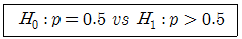
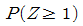
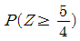
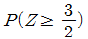
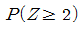
(정답률: 30%)
87. 사업시행에 대한 찬반 여론을 수렴하기 위해 400명의 주민을 대상으로 표본조사를 실시하였다. 그러나 표본수가 너무 적어 신뢰성에 문제가 있다는 지적이 있어 4배인 1,600명의 주민을 재조사하였다. 신뢰수준 95% 하에서 추정오차는 얼마나 감소하는가?
- 1.23%
- 1.03%
- 2.45%
- 2.06%
(정답률: 36%)
88. 모수의 추정에서 추정량의 분포에 대하여 요구되는 성질 중 표본오차와 관련 있는 것은?
- 불편성
- 정규성
- 일치성
- 유효성
(정답률: 22%)
89. 어느 고등학교 1학년생 280명에 대한 국어성적의 평균이 82점, 표준편차가 8점이었다. 66점부터 98점 사이에 포함된 학생들은 몇 명 이상인가?(오류 신고가 접수된 문제입니다. 반드시 정답과 해설을 확인하시기 바랍니다.)
- 211명
- 230명
- 240명
- 22명
(정답률: 22%)
90. 확률변수 X가 정규분포 N(μ,σ2)을 따를 때, 다음 설명 중 틀린 것은?
- X의 확률분포는 좌우대칭인 종모양이다.
- Z=(X-μ)/σ 라 두면 Z의 분포는 N(0,1)이다.
- X의 평균, 중위수는 일치하므로 X의 분포의 비대칭도는 0이다.
- X의 관측값이 μ-σ 와 μ+σ 사이에 나타날 확률은 약 95%이다.
(정답률: 52%)
91. 어떤 시험에서 학생들의 점수는 평균이 75점, 표준편차가 15점인 정규분포를 따른다고 한다. 상위 10%의 학생에게 학점을 준다고 했을 때, 다음 중 학점을 받을 수 있는 최소점수는? (P(0＜Z＜1.28)=0.4)
- 89
- 93
- 95
- 97
(정답률: 44%)
92. 새로운 복지정책에 대한 찬반여부가 성별에 따라 차이가 있는지를 알아보기 위해 남녀 100명씩을 랜덤하게 추출하여 조사한 결과이다.
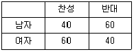
가설 “H0 : 새로운 복지정책에 대한 찬반여부는 남녀성별에 따라 차이가 없다.”의 검정에 대한 설명으로 틀린 것은?- 가설검정에 이용되는 카이제곱 통계량의 자유도는 1이다.
- 가설검정에 이용되는 카이제곱 통계량의 값은 8이다.
- 유의수준 0.⑤에서 기각역의 임계값이 3.84이면 카이제곱검정의 유의확률(p값)은 0.⑤보다 크다.
- 남자와 여자의 찬성비율에 대한 오즈비(Odds Ratio)
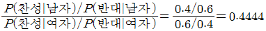
로 구해진다.
(정답률: 40%)
93. 매출액과 광고액은 직선의 관계에 있으며, 이때 상관계수는 0.90이다. 만일 매출액을 종속변수 그리고 광고액을 독립변수로 선형회귀분석을 실시할 경우, 추정된 회귀선의 설명력에 해당하는 값은?
- 0.99
- 0.91
- 0.89
- 0.81
(정답률: 39%)
94. 단순회귀모형 Yi=α+βxi+εi,(i=1,2,⋯,n) 가정하에 자료를 분석하기로 하였다. 각각의 독립변수 xi에서 반응변수 Yi를 관측하여 정리한 결과가 다음과 같을 때, 회귀계수 α,β의 최소제곱 추정값을 순서대로 나열한 것은?
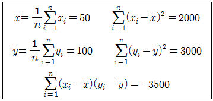
- 187.5, -1.75
- 190.5, -2.75
- 200.5, -1.75
- 187.5, -2.75
(정답률: 41%)
95.
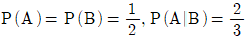
일 때,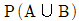
를 구하면?- 1/3
- 1/2
- 2/3
- 1
(정답률: 21%)
96. 이항분포를 따르는 확률변수 X에 관한 설명으로 틀린 것은?
- 반복시행횟수가 n이면, X가 취할 수 있는 가능한 값은 0부터 n까지이다.
- 반복시행횟수가 n이고, 성공률이 p이면 X의 평균은 np이다.
- 반복시행횟수가 n이고, 성공률이 p이면 X의 분산은 np(1-p)이다.
- 확률변수 X는 0 또는 1만을 취한다.
(정답률: 50%)
97. 어느 공장에서 생산되는 축구공의 탄력을 조사하기 위해 랜덤하게 추출한 49개의 공을 조사한 결과 평균이 200mm 표준편차가 20mm였다. 이 공장에서 생산되는 축구공의 탄력의 평균에 대한 95% 신뢰구간을 추정하면? (단, P(Z＞1.96)=0.025), P(Z＞1.645)=0.⑤)
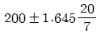
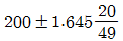
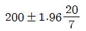
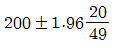
(정답률: 57%)
98. 표본자료가 다음과 같을 때 대푯값으로 가장 적합한 것은?
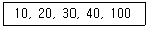
- 최빈수
- 중위수
- 산술평균
- 가중평균
(정답률: 57%)
99. 일원배치 분산분석법을 적용하기에 부적합한 경우는?
- 어느 화학회사에서 3개 제조업체에서 생산된 기계로 원료를 혼합하는데 소요되는 평균시간이 동일한지를 검정하기 위하여 소요시간(분) 자료를 수집하였다.
- 소기업 경영연구에 실린 한 논문은 자영업자의 스트레스가 비자영업자 보다 높다고 결론을 내렸다. 부동산중개업자, 건축가, 증권거래인들을 각각 15명씩 무작위로 추출하여 5점 척도로 된 15개 항목으로 직무스트레스를 조사하였다.
- 어느 회사에 다니는 회사원은 입사 시 학점이 높은 사람일수록 급여를 많이 받는다고 알려져 있다. 30명을 무작위로 추출하여 평균평점과 월급여를 조사하였다.
- A구, B구, C구 등 3개 지역이 서울시에서 아파트 가격이 가장 높은 것으로 나타났다. 각 구마다 15개씩 아파트 매매가격을 조사하였다.
(정답률: 52%)
100. 10개의 전구가 들어 있는 상자가 있다. 그 중 2개의 불량품이 포함되어 있다. 이 상자에서 전구 4개를 비복원으로 추출하여 검사할 때, 불량품이 1개 포함될 확률은?
- 0.076
- 0.25
- 0.53
- 0.8
(정답률: 36%)